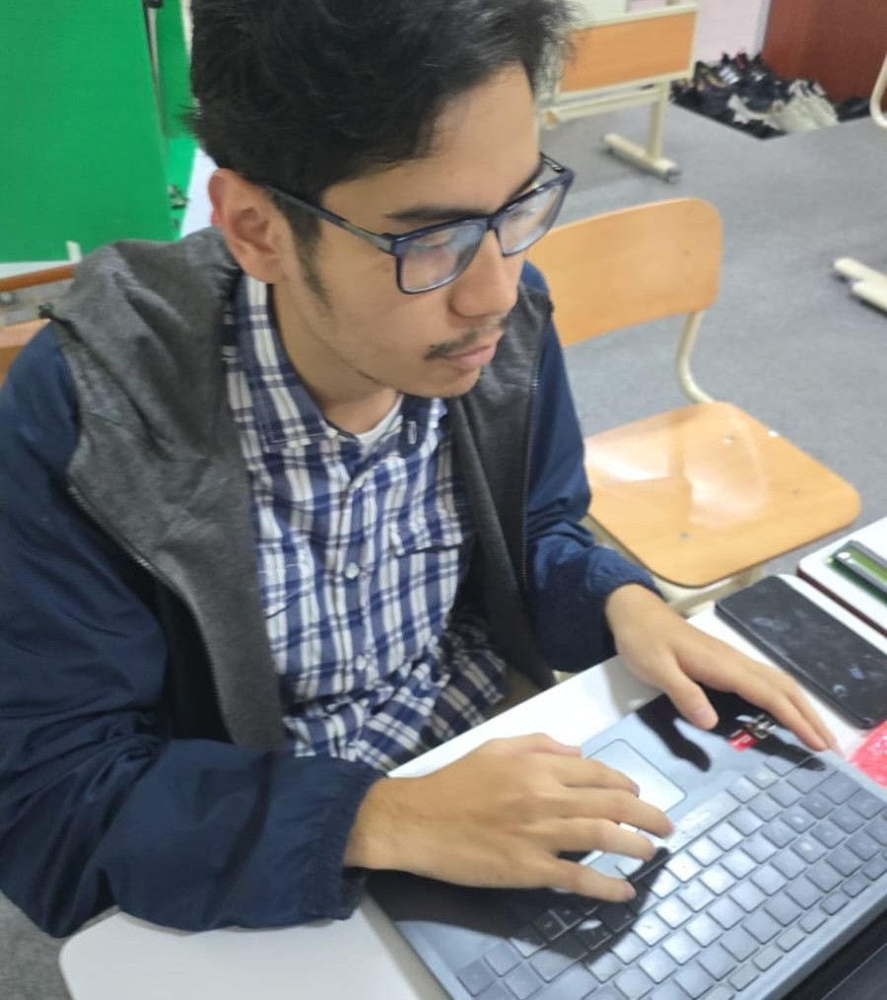
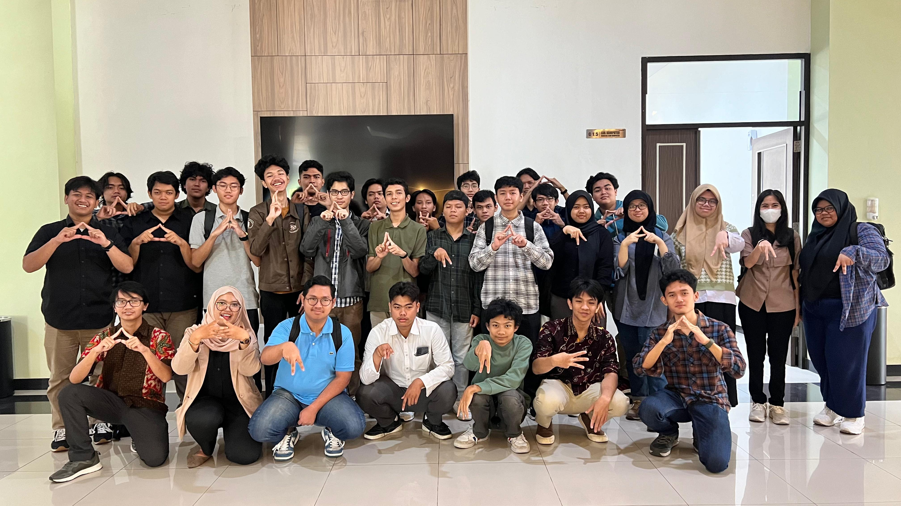

Programming
Languages I use to build application logic and solve problems.
COMPUTER ENGINEERING GRADUATE · MALANG, INDONESIA
A software developer focused on building web applications, designing backend systems, and turning ideas into practical solutions.
01 / ABOUT
I'm a Computer Engineering graduate from Universitas Brawijaya with a strong interest in software and web application development.
I have experience building REST APIs and full-stack web applications using NestJS, TypeScript, PostgreSQL, and Vue.js. I enjoy working across the application stack — from structuring backend logic and relational data to building interfaces that make systems easier to use.
Beyond web development, my academic and internship experience has introduced me to machine learning, computer vision, embedded systems, and IoT. These experiences have strengthened my approach to understanding problems and building solutions across different areas of technology.
02 / TOOLKIT
The tools and technologies I've used across academic, internship, and personal projects.
Languages I use to build application logic and solve problems.
Building server-side applications, APIs, and data-driven features.
Developing web interfaces and connecting them with application APIs.
Working with relational data and application development workflows.
Academic and project experience in machine learning and computer vision.
Experience integrating software with devices and hardware components.
03 / SELECTED WORK
A selection of software development and research work that reflects my technical interests and experience.
FULL-STACK WEB APPLICATION
Developed a full-stack ordering and payment application with dedicated buyer, merchant, and administrator roles. The system provides RESTful APIs for merchant applications, product management, order processing, and payment verification.
COMPUTER VISION & EMBEDDED SYSTEMS
Developed a smart trash bin prototype that uses computer vision and machine learning to classify waste and support automated waste sorting through embedded hardware.
04 / EXPERIENCE
Practical experience through an internship and academic teaching roles.

INTERNSHIP

ACADEMIC EXPERIENCE
05 / EDUCATION

BACHELOR'S DEGREE
Universitas Brawijaya · Malang, Indonesia
06 / CONTACT
I'm open to opportunities to learn, collaborate, and contribute to meaningful software projects.
razzan.rianta@gmail.com ↗LinkedIn: Razzan Naufal Rianta